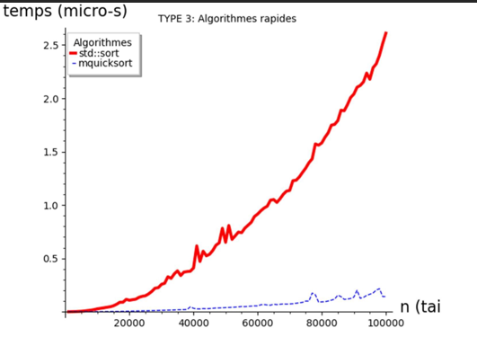

MES PROJETS

SAÉ S1.01 (C++)
- Conception d'une bibliothèque de données.
- Organisation de mon développement avec des fichiers .hpp et .cpp bien distincts.
- Création de constructeurs pour initialiser mes objets de manière sécurisée.
- Manipulation des algorithmes complexes pour traiter les informations efficacement.

SAÉ S1.02 (Comparaison d'algorithmes)
- Implémentation de l'algorithme du tri à bulles pour organiser des vecteurs de données de manière croissante.
- Programmation de l'algorithme du tri par insertion, une méthode différente pour arriver au même résultat de tri.
- Automatisation de la compilation de mes différents programmes grâce à un script de build en Shell.
- Utilisation de plusieurs fichiers de données (.data) pour tester l'efficacité de mes tris sur des volumes d'informations variés.

SAÉ S1.04 (Création de Base de Données)
- Analyse d'un cahier des charges pour concevoir le diagramme de classes d'une base de données relationnelle.
- Manipulation de requêtes SQL complexes pour extraire et vérifier la qualité des informations de la base.
- Apprentissage à utiliser des jointures et des fonctions d'agrégation pour répondre aux besoins du client.
- Création de scripts d'insertion et de mise à jour pour gérer les stocks et les commandes de l'entreprise.
- Structuration de mon travail pour assurer l'intégrité des données tout au long du projet.

SAÉ S1.05 (Recueil de besoins & Com)
- Conception et développement d'un site web complet présentant l'IUT d'Arles en utilisant HTML5 et CSS3.
- Réalisation d'un flyer publicitaire professionnel sur Canva en respectant une charte graphique précise.
- Apprentissage à recueillir et analyser les besoins d'un client pour proposer des solutions visuelles adaptées.
- Structuration de l'information de manière ergonomique pour faciliter la navigation des futurs étudiants sur le site.
- Travail sur l'identité visuelle pour rendre la communication de l'établissement plus moderne et attractive.